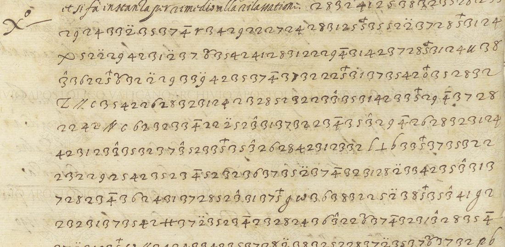

At a glanceKnown key applied · complete
- The letters
- Filippo Sega, Bishop of Piacenza, writes from Paris to Rome on 26 November 1590 (to a cardinal) and on 16 January 1591 (to Cardinal Enrico Caetani). Both are mostly in clear; one enciphered passage of 15 lines in the first, about twenty short enciphered groups set inside the sentences of the second.
- Where
- Archivio Apostolico Vaticano, Segreteria di Stato, Francia 32, f. 17r-v and f. 71r-v. DECODE records R5612 and R5616.
- The cipher
- Meister’s key no. 65, “cifra servita in legatione sub Sisto V”: letters as pairs of digits, vowels as signs on the pair or on a single digit, nulls 7 8 9 0, single letters and symbols for common words, three-digit numbers for names.
- How it was deciphered
- The key was applied unchanged. It was tested first on Sega’s letter of 21 December 1590, whose contemporary decipherment is in the same volume: 0.934 of its characters and 0.862 of its words agree, against at most 0.551 and 0.492 for 200 controls.
- What it says
- Sega has some information on the bad nature of a bishop held prisoner and his leaning to the opposite party, and will temporise: “anderò temporeggiando il più che potrò”. In January he reports what Mayenne wrote for him to Rome and the waiting for “quel pomo”.
- Still open
- Two of 84 enciphered words in the first letter (canonizatorio, whose digits are certain but whose sense is not established, and one code letter). Nine words are probable readings.
- Credit
- Brice Dudout (Europe chiffrée), working with Claude Opus 5.5: transcription, held-out validation, reading and English translation, by email of 29 October 2026. George Lasry identified key no. 65 for Sega, a different letter with its own page.
01 The letters
Filippo Sega, Bishop of Piacenza, wrote from Paris to Rome in 1590–91; his despatches are in the Segreteria di Stato, Francia 32. The first letter was written in Paris at the end of November 1590, just after the siege had been lifted by Farnese. In the clear text before the cipher Sega speaks of a bishop kept in prison, of a “sacrilege” that stirs the city and of requests for his release; the cipher holds his own judgement. The second letter is addressed to Cardinal Caetani and speaks of Mayenne, the Duke of Bavaria and Sega’s own affairs at Rome. A faint note at the head of f. 71r, “… Decifrata 17 …”, shows that a contemporary decipherment once existed; it is not among the images on DECODE.

02 The cipher
Meister printed the key in 1906 (Die Geheimschrift im Dienste der päpstlichen Kurie, no. 65, pp. 435–436). A two-digit number is a letter or a syllable (28 i, 31 n, 35 r, 37 t, 42 a, 24 e). A sign over a digit gives the vowel: a diaeresis a, a circumflex e, a bar i, a cross o, a small 2 u. Single letters stand for words (Z non, c per, b che, l il, X della), a few symbols for tanto, quanto, in, ma, più, and dotted three-digit numbers for names (128 Mayenne, 129 Navarre, 453 Villeroy). The digits 7, 8, 9 and 0 are nulls. The key is in targets/sega1590/key.tsv.
03 How it was deciphered
The key. George Lasry identified key no. 65 for Sega’s letter of 9 January 1591 (BnF Français 3613), a separate target. Brice Dudout recognised the same cipher on f. 17r, where the word Villeroy is written over the number 453 in the DECODE image, and applied the key without changing a value.
The test. A protocol was written and hashed before any calculation. Sega’s letter of 21 December 1590 (Francia 32 ff. 228v and 231; DECODE R5621) carries a contemporary decipherment on f. 230, dated 26 March 1591. The decipherment was transcribed and frozen first; the cipher was then decoded with key 65 unchanged. 268 of 287 characters (0.934) and 56 of 65 words (0.862) agree, against at most 0.551 and 0.492 for 200 controls with the letter values permuted. The criteria, 0.85 and 0.75, were met. The caveat is Brice Dudout’s: the transcriptions were made with the key in mind. A letter of 2 July 1591 (R5618) is in another system; key 65 segments only 62.5% of its pairs, under the 85% threshold fixed beforehand, and was rejected there.
The letters. The passage of 26 November 1590 (345 signs) and the groups of 16 January 1591 were transcribed from the images, frozen, decoded with key 65 and read. A third letter of Sega, the duplicate of early January 1591 (R5615), was decoded with the same key and read only in part; it is not part of this entry.
04 The reading
Brice Dudout’s text, spelling of the cipher kept (qulche, aparenti, tuto, sano, posono, iritando, zopicamento); u/v, accents and punctuation modernised. {x} probable; <x> unresolved; the sentence in square brackets is in clear in the letter.
Io et fuori de le parti ho {qulche} informatione della mala natura et inclinatione del {vescovo} al partito {contrario}, non tanto per ragione di moderna politica, quanto per zopicamento di religione; et anderò temporeggiando il più che potrò, col far dimostrationi aparenti di sentimento in suo favore et contra, ma tardi di esecutione, iritando in tanto le parti a vomitar tuto quello che sano et posono [in clear: per poter meglio informar costì et più maturamente risolvere quel che convenga in questo così notabile accidente.] <canonizatorio> della festa che si può sperare il nostro <c> un giorno, se non è più che caduto.
I myself, and outside the parties, have some information on the bishop’s bad nature and his leaning towards the opposite party, not so much for reasons of modern politics as from a limping religion. I shall go on temporising as much as I can, making outward shows of feeling for and against him, but slow in execution, meanwhile stirring the parties to spew out all they know and can, [in clear: so as to be able to inform Rome better and resolve more maturely what is fitting in so notable an incident.] The last enciphered sentence is obscure and is not translated.
The cipher of the first letter has no et before anderò; the established text of the contributor adds it. In the second letter (16 January 1591) the enciphered words are set inside Sega’s clear sentences, which the contributor gives abridged. Sega says the Duke of Mayenne (128) told the provincial that he had written to Rome something good for him, but so obscurely that Sega does not understand it; that he needs with the Pope no stronger intercession than the one the Duke of Bavaria offers of his own motion; and that he has awaited “quel pomo” with singular patience and dissimulation for many years. The contributor’s hypothesis, which is not established here, is that the fruit is the red hat: Sega was made cardinal in December 1591. The full text and translation of both letters are under Full texts below.
05 What remains uncertain
- canonizatorio, 26 Nov 1590, line 13: the digits are certain, the sense is not established (unresolved).
- One code letter near the end, c: the group 22 followed by a dotted 9, a null (unresolved).
- {qulche}: the vowel a is missing in the cipher, a clerk’s omission (probable). {vescovo}: the 6 with a small 2 looks like an 8 (probable). {contrario}: one of the two 2s is unclear (probable).
- 16 Jan 1591, six probable words: {provinciale}, {intercesione} (an open 3 close to a 7), {questa} {causa}, {rapresentata} (an open 3 close to a 9) and {così} (one 3 too many before a null).
- Both texts were transcribed and deciphered from Brice Dudout’s transcription of the DECODE images; the images are not republished here beyond the detail above (DECODE terms).
Full texts
The transcription and the decryption of every document on this page, so that the reading can be used and checked. Short files are shown here; all are in the repository.
Sega, Paris, 26 Nov 1590, enciphered passage f. 17r-v
Sega reports the bishop's bad nature and leaning to the opposite party, out of limping religion rather than politics, and says he will temporise, showing feelings for and against him while stirring the parties to tell all they know.
Transcription
# AAV, Segreteria di Stato, Francia 32, f. 17r (lines L01-L14) and f. 17v (line P4): Filippo Sega, Paris, 26 Nov 1590. # Transcribed from DECODE R5612 (views 3-4), https://de-crypt.org/decrypt-web/RecordsView/5612 ; images not included (DECODE terms: research use only). # Notation: digit pairs; a sign after a digit: ':' diaeresis (a), '^' circumflex (e), '-' bar (i), '+' cross (o), 's' small 2 (u). # Code letters of Meister key 65: Z non, b che, c per, l il, r ho, u del, X della, P quello; symbols TANTO QUANTO IN PIU MA. # ? = doubtful sign. A pair split by the line end is written on the line where it starts. Clear text between L12 and L13 not transcribed. L01: 28 32 41 25 38 32 35 28 23 3^ L02: 29 24 33 2: 35 37 4- r 34 29 22 27 24 28 31 25 5+ 35 52 2: 37 28 5+ 31 24 L03: X? 52 2: 29 42 31 2: 37 6s? 35 42 41 28 31 22 29 4- 31 42 37 28 5+ 31 24 u 38 L04: 3^ 36 22 5+ 6s? 32 2: 29 33 9: 42 35 37 4- 37 32 22? 5+ 31 37 35 42 0+ 35 28 32 L05: Z TANTO c 35 42 26 28 32 31 24 23 28 52 32 23 3^ 35 31 42 33 5+ 29 4- 37 28 L06: 22 42 QUANTO c 62 32 33 4- 22 2: 52 3^ 31 37 32 23 4- 35 3^ 29 4- 26 28 32 31 24 L07: 42 31 23 3^ 35 32 37 3^ 52 33 5+ 35 3^ 26 26 28 42 31 23 32 l PIU b 33 5+ 37 35 32 22 L08: 32 29 25 42 35 23 4- 52 32 36 37 35 2: 37 4- 32 31 28 2: 33 42 35 3^ 31 37 L09: 28 23 4- 36 24 31 37 28 52 3^ 31 37 5+ 9 IN 36 38 32 25 2: 38 5+ 35 3^ 41 9 22 L10: 32 31 37 35 42 MA 37 2: 35 23 4- 23 28 24 36 3^ 22 6s 37 4- 32 31 3^ 28 35 4- L11: 37 2: 31 23 5+ IN TANTO 29 24 33 42 35 37 28 2: 38 32 52 28 37 2: 35 37 6s 37 32 P? b L12: 36 2: 31 32 41 33 32 36 5+ 31 32 L13: 22 42 31 32 31 28 62 2: L14: 37 32 35 28 32 X 25 3^ 36 37 42 b 36 28 33 6s 32 36 33 24 35 42 35 24 l 31 P4: 32 36 37 35 5+ 22 9? 38 31 26 28 32 35 31 5+ 36 24 Z 24 PIU b 22 42 23 38 37 32 # --- Second letter: AAV Francia 32, f. 71r (groups A1-A14) and f. 71v (groups B1-B4): Filippo Sega to Cardinal Caetani, Paris, 16 Jan 1591. # Transcribed from DECODE R5616 (views 3 and 7), https://de-crypt.org/decrypt-web/RecordsView/5616 ; images not included. Each line is one enciphered group set inside the clear text. # Extra symbols: CON (two verticals on a base line), IN (omega), QUESTI (triangle), X (della); three digits = nomenclator (dot on the last digit). # Open 3 (looking like 9 or 7) written 3 when read as 3 (key in mind). One ink blot in B1 not transcribed. A1: CON 128 A1b: 2: 122 A2: 36 22 35 28 36 3^ 42 428 A3: 23 28 29 24 4- A4: 23 42 134 52 3^ 23 24 36 28 52 2: A5: X 29 24 37 38 35 42 A6: 42 29 28 31 24 26 32 37 28 A7: l 33 35 5 9 2? 6s 28 31 22 4- 42 29 24 A8: 128 A9: Z 36 32 b 23 28 21 32 31 5+ c 52 24 42 139 A10: 128 A11: 42 33 0+ 35 24 36 32 122 A12: 28 31? 37 3^ 35 22 24 36 28 32 31 3^ A13: l 36 28 26 31 5+ 35 23 6s 22 42 23 28 21 2: 38 28 24 35 42 A14: IN 26 35 2: 37 28 42 23 4- 132 B1: 23 28 52 42 37 6s 35 42 35 3^ B2: 34 24 29 33 5+ 52 32 B3: 33 8^ 35 32 33 0 35 28 2: 36 37 42 26 28 32 31 24 B4: QUESTI 42 22 22 42 38 36 2: 35 42 33 35 3^ 36 24 31? 37 42 37 2: 22 5+ 36 3 9: 28
Decryption
# Sign-by-sign decryption with Meister key 65 applied unchanged ([word] = code letter or symbol; nulls 7 8 9 0 dropped).
## L01
28 32 41 25 38 32 35 28 23 3^
ioetfuoride
## L02
29 24 33 2: 35 37 4- r 34 29 22 27 24 28 31 25 5+ 35 52 2: 37 28 5+ 31 24
leparti[ho]qulcheinformatione
## L03
X? 52 2: 29 42 31 2: 37 6s? 35 42 41 28 31 22 29 4- 31 42 37 28 5+ 31 24 u 38
[della]malanaturaetinclinatione[del]u
## L04
3^ 36 22 5+ 6s? 32 2: 29 33 9: 42 35 37 4- 37 32 22? 5+ 31 37 35 42 0+ 35 28 32
escouoalpartitocontrario
## L05
Z TANTO c 35 42 26 28 32 31 24 23 28 52 32 23 3^ 35 31 42 33 5+ 29 4- 37 28
[non][tanto][per]ragionedimodernapoliti
## L06
22 42 QUANTO c 62 32 33 4- 22 2: 52 3^ 31 37 32 23 4- 35 3^ 29 4- 26 28 32 31 24
ca[quanto][per]zopicamentodireligione
## L07
42 31 23 3^ 35 32 37 3^ 52 33 5+ 35 3^ 26 26 28 42 31 23 32 l PIU b 33 5+ 37 35 32 22
anderotemporeggiando[il][piu][che]potroc
## L08
32 29 25 42 35 23 4- 52 32 36 37 35 2: 37 4- 32 31 28 2: 33 42 35 3^ 31 37
olfardimostrationiaparent
## L09
28 23 4- 36 24 31 37 28 52 3^ 31 37 5+ 9 IN 36 38 32 25 2: 38 5+ 35 3^ 41 9 22
idisentimento[in]suofauoreetc
## L10
32 31 37 35 42 MA 37 2: 35 23 4- 23 28 24 36 3^ 22 6s 37 4- 32 31 3^ 28 35 4-
ontra[ma]tardidiesecutioneiri
## L11
37 2: 31 23 5+ IN TANTO 29 24 33 42 35 37 28 2: 38 32 52 28 37 2: 35 37 6s 37 32 P? b
tando[in][tanto]lepartiauomitartuto[quello][che]
## L12
36 2: 31 32 41 33 32 36 5+ 31 32
sanoetposono
## L13
22 42 31 32 31 28 62 2:
canoniza
## L14
37 32 35 28 32 X 25 3^ 36 37 42 b 36 28 33 6s 32 36 33 24 35 42 35 24 l 31
torio[della]festa[che]sipuosperare[il]n
## P4
32 36 37 35 5+ 22 9? 38 31 26 28 32 35 31 5+ 36 24 Z 24 PIU b 22 42 23 38 37 32
ostrocungiornose[non]e[piu][che]caduto
# --- Second letter, f. 71r-v (16 Jan 1591)
## A1
CON 128
[con]{Umena}
## A1b
2: 122
a{Papa}
## A2
36 22 35 28 36 3^ 42 428
scrisea{Sua Santita}
## A3
23 28 29 24 4-
dilei
## A4
23 42 134 52 3^ 23 24 36 28 52 2:
da{Sua Eccellenza}medesima
## A5
X 29 24 37 38 35 42
[della]letura
## A6
42 29 28 31 24 26 32 37 28
alinegoti
## A7
l 33 35 5 9 2? 6s 28 31 22 4- 42 29 24
[il]proauinciale
## A8
128
{Umena}
## A9
Z 36 32 b 23 28 21 32 31 5+ c 52 24 42 139
[non]so[che]dibono[per]mea{Roma}
## A10
128
{Umena}
## A11
42 33 0+ 35 24 36 32 122
apreso{Papa}
## A12
28 31? 37 3^ 35 22 24 36 28 32 31 3^
intercesione
## A13
l 36 28 26 31 5+ 35 23 6s 22 42 23 28 21 2: 38 28 24 35 42
[il]signorducadibauiera
## A14
IN 26 35 2: 37 28 42 23 4- 132
[in]gratiadi{Sua Altezza}
## B1
23 28 52 42 37 6s 35 42 35 3^
dimaturare
## B2
34 24 29 33 5+ 52 32
quelpomo
## B3
33 8^ 35 32 33 0 35 28 2: 36 37 42 26 28 32 31 24
propriastagione
## B4
QUESTI 42 22 22 42 38 36 2: 35 42 33 35 3^ 36 24 31? 37 42 37 2: 22 5+ 36 3 9: 28
[questi]accausarapresentatacoseiReading
# Established text (Italian)
Conventions: {x} probable; <x> unresolved. Spelling of the cipher kept (qulche, aparenti, tuto, sano, posono, iritando, zopicamento); u/v, accents and punctuation modernised.
Io et fuori de le parti ho {qulche} informatione della mala natura et inclinatione del {vescovo} al partito {contrario}, non tanto per ragione di moderna politica, quanto per zopicamento di religione; et anderò temporeggiando il più che potrò, col far dimostrationi aparenti di sentimento in suo favore et contra, ma tardi di esecutione, iritando in tanto le parti a vomitar tuto quello che sano et posono [in clear in the letter: per poter meglio informar costì et più maturamente risolvere quel che convenga in questo così notabile accidente.] <canonizatorio> della festa che si può sperare il nostro <c> un giorno, se non è più che caduto.
## State of the reading
84 enciphered words (345 signs): 82 read in their sense (97.6%) under Daniel Bourdeau's 95% rule: 79 certain (94.0%), 3 probable (3.6%), 0 restored, 2 unresolved (2.4%): <canonizatorio> (digits certain, sense not established) and <c> (22 followed by a dotted 9, a null).
## Probable words
- {qulche}: certain digits qu-l-c-h-e, the a is missing (clerk's omission); "ho qualche informatione".
- della and natura (first probable) were confirmed by a blind re-reading of the sign shapes (plate of 29 Oct 2026: code letter x of della; 6 with superscript 2 of natura) and now count as certain.
- {vescovo}: the 6 with superscript 2 (u) looks like an 8, as in "natura" and "esecutione" (L10), where the u is certain.
- {contrario}: one 2 of 22 (c) unclear; the phrase "il partito contrario" recurs in clear on f. 17v.
- quello (first probable): sign rho = code letter p; "vomitar tuto quello che sano et posono"; confirmed by a blind re-reading of the sign shape (plate of 29 Oct 2026: same shape as the p of "per" in clear in the same hand) and now counts as certain.
# Second letter: Paris, 16 January 1591 (f. 71r-v, DECODE R5616)
[f. 71r] "... et quel che le scrivevo di haver passato" con Umena "intorno lo servitio" a Papa "non ho giudicato necessario il farlo dupplicare ..." "... mi Lui" scrise a Sua Santità "... senza pur fare mentione alcuna" di lei, "non ostante il mio primo ricordo, di già" da Sua Eccellenza medesima "approvato per buono; argomento" della letura "che egli fa ..., et dell'applicatione della mente" a li negoti; "ma transeat cum aliis." "Mi scrisse" il {provinciale} "che il medesimo" Umena "gl'ha ditto di haver scritto" non so che di bono per me a Roma; "ma me lo scrive così oscuro che non l'intendo precisamente ... quel che si habbia scritto" Umena "non lo so." "... non provando di haver bisogno" apreso Papa "di maggiore, più potente et più opportuna" {intercesione} "di quella che di suo proprio moto, buon padre, fa pigliar protettione" il signor duca di Baviera, "et ch'io mi prometto a tempo et luogo" in gratia di Sua Altezza "..." [f. 71v] "... co'l primo" di maturare "..." quel pomo "di cui con singolar patienza et dissimulatione tanti et tanti anni ho aspettata la" propria stagione, "mettendovi in compromesso più fiate ... la libertà di dire il vero, di cui ha di bisogno particolarmente" {questa} {causa}, {rapresentata} {così} "dall'una et l'altra parte assai lontano dal suo essere."
## State of the reading
52 enciphered words, all read in their sense (100%): 46 certain (88.5%), 6 probable (11.5%), 0 restored, 0 unresolved. Clear text of the letter in quotation marks (abridged "...").
## Probable words
- {provinciale}: 33 35 5 [9 null] 2? 6s 28 31 22 4- 42 29 24; the isolated 2 before the 6 with superscript 2 is doubtful; the clear text above mentions the Capuchin Fathers.
- {intercesione}: the second sign (31) is an open 3 close to a 7.
- {questa} {causa}: triangle (Meister's symbol for questi) followed by 42 (a), then 22 22 42 38 36 2: ("ccausa"): the clerk's spelling.
- {rapresentata}: the 31 of -senta- is an open 3 close to a 9.
- {così}: 22 5+ 36 3 9: 28, one 3 too many before the null 9 with diaeresis.
- Umena (128) = the Duke of Mayenne; 122 Papa, 428 Sua Santità, 134 Sua Eccellenza, 139 Roma, 132 Sua Altezza (all dotted on the last digit).
# Not included: duplicate of early January 1591 (ff. 49v-54v, DECODE R5615)
Not included here: a third letter of Sega, the duplicate ("Dupp.ta") of early January 1591 in Francia 32, ff. 49v-54v (DECODE R5615, https://de-crypt.org/decrypt-web/RecordsView/5615, images not included), was transcribed and decoded with the same key 65 over its whole enciphered text, but read only in part: 1,319 enciphered words, 1,094 read in their sense (82.9%: 886 certain, 205 probable, 3 restored, 225 unresolved), below Daniel Bourdeau's 95% threshold; the copy is also incomplete (f. 54v ends in the cipher, with no subscription). It is published on our site as a partial reading with the unresolved words shown in place (https://bdudout.github.io/europe-chiffree/en/documents.html#sega1591-dupl), and is not submitted here as a reading.Translation
# English translation
I myself, and outside the parties, have some information on the bishop's bad nature and his leaning towards the opposite party, not so much for reasons of modern politics as from a limping religion. I shall go on temporising as much as I can, making outward shows of feeling for and against him, but slow in execution, meanwhile stirring the parties to spew out all they know and can, [in clear:] so as to be able to inform [Rome] better and resolve more maturely what is fitting in so notable an incident. The last enciphered sentence ("<canonizatorio> della festa ... se non è più che caduto") remains obscure and is not translated.
## Second letter: Paris, 16 January 1591 (f. 71r-v)
[f. 71r] ... and what I wrote to you of having discussed with Mayenne about the service of the Pope, I did not think it necessary to have it sent in duplicate ... He wrote to His Holiness ... without even mentioning you, despite my first advice, already approved as good by His Excellency himself: a proof of the reading he makes ... and of the application of his mind to affairs; but let it pass. The provincial wrote to me that Mayenne himself told him he had written something or other good for me to Rome; but he writes it so obscurely that I do not understand it exactly ... What Mayenne wrote, I do not know. ... not finding that I need, with the Pope, a greater, more powerful and more timely intercession than the one which the lord Duke of Bavaria, of his own motion and as a good father, takes under his protection, and which I promise myself, in due time and place, in the favour of His Highness ... [f. 71v] ... that fruit ("quel pomo") whose proper season I have awaited with singular patience and dissimulation for so many years ... the freedom to speak the truth, which this cause particularly needs, represented as it is by both sides far from what it really is.Sega, Paris, 16 Jan 1591, enciphered groups f. 71r-v
Sega on Mayenne writing something good for him to Rome, the protection of the Duke of Bavaria, the long-awaited "pomo", and a cause misrepresented by both sides.
Transcription
# AAV, Segreteria di Stato, Francia 32, f. 17r (lines L01-L14) and f. 17v (line P4): Filippo Sega, Paris, 26 Nov 1590. # Transcribed from DECODE R5612 (views 3-4), https://de-crypt.org/decrypt-web/RecordsView/5612 ; images not included (DECODE terms: research use only). # Notation: digit pairs; a sign after a digit: ':' diaeresis (a), '^' circumflex (e), '-' bar (i), '+' cross (o), 's' small 2 (u). # Code letters of Meister key 65: Z non, b che, c per, l il, r ho, u del, X della, P quello; symbols TANTO QUANTO IN PIU MA. # ? = doubtful sign. A pair split by the line end is written on the line where it starts. Clear text between L12 and L13 not transcribed. L01: 28 32 41 25 38 32 35 28 23 3^ L02: 29 24 33 2: 35 37 4- r 34 29 22 27 24 28 31 25 5+ 35 52 2: 37 28 5+ 31 24 L03: X? 52 2: 29 42 31 2: 37 6s? 35 42 41 28 31 22 29 4- 31 42 37 28 5+ 31 24 u 38 L04: 3^ 36 22 5+ 6s? 32 2: 29 33 9: 42 35 37 4- 37 32 22? 5+ 31 37 35 42 0+ 35 28 32 L05: Z TANTO c 35 42 26 28 32 31 24 23 28 52 32 23 3^ 35 31 42 33 5+ 29 4- 37 28 L06: 22 42 QUANTO c 62 32 33 4- 22 2: 52 3^ 31 37 32 23 4- 35 3^ 29 4- 26 28 32 31 24 L07: 42 31 23 3^ 35 32 37 3^ 52 33 5+ 35 3^ 26 26 28 42 31 23 32 l PIU b 33 5+ 37 35 32 22 L08: 32 29 25 42 35 23 4- 52 32 36 37 35 2: 37 4- 32 31 28 2: 33 42 35 3^ 31 37 L09: 28 23 4- 36 24 31 37 28 52 3^ 31 37 5+ 9 IN 36 38 32 25 2: 38 5+ 35 3^ 41 9 22 L10: 32 31 37 35 42 MA 37 2: 35 23 4- 23 28 24 36 3^ 22 6s 37 4- 32 31 3^ 28 35 4- L11: 37 2: 31 23 5+ IN TANTO 29 24 33 42 35 37 28 2: 38 32 52 28 37 2: 35 37 6s 37 32 P? b L12: 36 2: 31 32 41 33 32 36 5+ 31 32 L13: 22 42 31 32 31 28 62 2: L14: 37 32 35 28 32 X 25 3^ 36 37 42 b 36 28 33 6s 32 36 33 24 35 42 35 24 l 31 P4: 32 36 37 35 5+ 22 9? 38 31 26 28 32 35 31 5+ 36 24 Z 24 PIU b 22 42 23 38 37 32 # --- Second letter: AAV Francia 32, f. 71r (groups A1-A14) and f. 71v (groups B1-B4): Filippo Sega to Cardinal Caetani, Paris, 16 Jan 1591. # Transcribed from DECODE R5616 (views 3 and 7), https://de-crypt.org/decrypt-web/RecordsView/5616 ; images not included. Each line is one enciphered group set inside the clear text. # Extra symbols: CON (two verticals on a base line), IN (omega), QUESTI (triangle), X (della); three digits = nomenclator (dot on the last digit). # Open 3 (looking like 9 or 7) written 3 when read as 3 (key in mind). One ink blot in B1 not transcribed. A1: CON 128 A1b: 2: 122 A2: 36 22 35 28 36 3^ 42 428 A3: 23 28 29 24 4- A4: 23 42 134 52 3^ 23 24 36 28 52 2: A5: X 29 24 37 38 35 42 A6: 42 29 28 31 24 26 32 37 28 A7: l 33 35 5 9 2? 6s 28 31 22 4- 42 29 24 A8: 128 A9: Z 36 32 b 23 28 21 32 31 5+ c 52 24 42 139 A10: 128 A11: 42 33 0+ 35 24 36 32 122 A12: 28 31? 37 3^ 35 22 24 36 28 32 31 3^ A13: l 36 28 26 31 5+ 35 23 6s 22 42 23 28 21 2: 38 28 24 35 42 A14: IN 26 35 2: 37 28 42 23 4- 132 B1: 23 28 52 42 37 6s 35 42 35 3^ B2: 34 24 29 33 5+ 52 32 B3: 33 8^ 35 32 33 0 35 28 2: 36 37 42 26 28 32 31 24 B4: QUESTI 42 22 22 42 38 36 2: 35 42 33 35 3^ 36 24 31? 37 42 37 2: 22 5+ 36 3 9: 28
Decryption
# Sign-by-sign decryption with Meister key 65 applied unchanged ([word] = code letter or symbol; nulls 7 8 9 0 dropped).
## L01
28 32 41 25 38 32 35 28 23 3^
ioetfuoride
## L02
29 24 33 2: 35 37 4- r 34 29 22 27 24 28 31 25 5+ 35 52 2: 37 28 5+ 31 24
leparti[ho]qulcheinformatione
## L03
X? 52 2: 29 42 31 2: 37 6s? 35 42 41 28 31 22 29 4- 31 42 37 28 5+ 31 24 u 38
[della]malanaturaetinclinatione[del]u
## L04
3^ 36 22 5+ 6s? 32 2: 29 33 9: 42 35 37 4- 37 32 22? 5+ 31 37 35 42 0+ 35 28 32
escouoalpartitocontrario
## L05
Z TANTO c 35 42 26 28 32 31 24 23 28 52 32 23 3^ 35 31 42 33 5+ 29 4- 37 28
[non][tanto][per]ragionedimodernapoliti
## L06
22 42 QUANTO c 62 32 33 4- 22 2: 52 3^ 31 37 32 23 4- 35 3^ 29 4- 26 28 32 31 24
ca[quanto][per]zopicamentodireligione
## L07
42 31 23 3^ 35 32 37 3^ 52 33 5+ 35 3^ 26 26 28 42 31 23 32 l PIU b 33 5+ 37 35 32 22
anderotemporeggiando[il][piu][che]potroc
## L08
32 29 25 42 35 23 4- 52 32 36 37 35 2: 37 4- 32 31 28 2: 33 42 35 3^ 31 37
olfardimostrationiaparent
## L09
28 23 4- 36 24 31 37 28 52 3^ 31 37 5+ 9 IN 36 38 32 25 2: 38 5+ 35 3^ 41 9 22
idisentimento[in]suofauoreetc
## L10
32 31 37 35 42 MA 37 2: 35 23 4- 23 28 24 36 3^ 22 6s 37 4- 32 31 3^ 28 35 4-
ontra[ma]tardidiesecutioneiri
## L11
37 2: 31 23 5+ IN TANTO 29 24 33 42 35 37 28 2: 38 32 52 28 37 2: 35 37 6s 37 32 P? b
tando[in][tanto]lepartiauomitartuto[quello][che]
## L12
36 2: 31 32 41 33 32 36 5+ 31 32
sanoetposono
## L13
22 42 31 32 31 28 62 2:
canoniza
## L14
37 32 35 28 32 X 25 3^ 36 37 42 b 36 28 33 6s 32 36 33 24 35 42 35 24 l 31
torio[della]festa[che]sipuosperare[il]n
## P4
32 36 37 35 5+ 22 9? 38 31 26 28 32 35 31 5+ 36 24 Z 24 PIU b 22 42 23 38 37 32
ostrocungiornose[non]e[piu][che]caduto
# --- Second letter, f. 71r-v (16 Jan 1591)
## A1
CON 128
[con]{Umena}
## A1b
2: 122
a{Papa}
## A2
36 22 35 28 36 3^ 42 428
scrisea{Sua Santita}
## A3
23 28 29 24 4-
dilei
## A4
23 42 134 52 3^ 23 24 36 28 52 2:
da{Sua Eccellenza}medesima
## A5
X 29 24 37 38 35 42
[della]letura
## A6
42 29 28 31 24 26 32 37 28
alinegoti
## A7
l 33 35 5 9 2? 6s 28 31 22 4- 42 29 24
[il]proauinciale
## A8
128
{Umena}
## A9
Z 36 32 b 23 28 21 32 31 5+ c 52 24 42 139
[non]so[che]dibono[per]mea{Roma}
## A10
128
{Umena}
## A11
42 33 0+ 35 24 36 32 122
apreso{Papa}
## A12
28 31? 37 3^ 35 22 24 36 28 32 31 3^
intercesione
## A13
l 36 28 26 31 5+ 35 23 6s 22 42 23 28 21 2: 38 28 24 35 42
[il]signorducadibauiera
## A14
IN 26 35 2: 37 28 42 23 4- 132
[in]gratiadi{Sua Altezza}
## B1
23 28 52 42 37 6s 35 42 35 3^
dimaturare
## B2
34 24 29 33 5+ 52 32
quelpomo
## B3
33 8^ 35 32 33 0 35 28 2: 36 37 42 26 28 32 31 24
propriastagione
## B4
QUESTI 42 22 22 42 38 36 2: 35 42 33 35 3^ 36 24 31? 37 42 37 2: 22 5+ 36 3 9: 28
[questi]accausarapresentatacoseiReading
# Established text (Italian)
Conventions: {x} probable; <x> unresolved. Spelling of the cipher kept (qulche, aparenti, tuto, sano, posono, iritando, zopicamento); u/v, accents and punctuation modernised.
Io et fuori de le parti ho {qulche} informatione della mala natura et inclinatione del {vescovo} al partito {contrario}, non tanto per ragione di moderna politica, quanto per zopicamento di religione; et anderò temporeggiando il più che potrò, col far dimostrationi aparenti di sentimento in suo favore et contra, ma tardi di esecutione, iritando in tanto le parti a vomitar tuto quello che sano et posono [in clear in the letter: per poter meglio informar costì et più maturamente risolvere quel che convenga in questo così notabile accidente.] <canonizatorio> della festa che si può sperare il nostro <c> un giorno, se non è più che caduto.
## State of the reading
84 enciphered words (345 signs): 82 read in their sense (97.6%) under Daniel Bourdeau's 95% rule: 79 certain (94.0%), 3 probable (3.6%), 0 restored, 2 unresolved (2.4%): <canonizatorio> (digits certain, sense not established) and <c> (22 followed by a dotted 9, a null).
## Probable words
- {qulche}: certain digits qu-l-c-h-e, the a is missing (clerk's omission); "ho qualche informatione".
- della and natura (first probable) were confirmed by a blind re-reading of the sign shapes (plate of 29 Oct 2026: code letter x of della; 6 with superscript 2 of natura) and now count as certain.
- {vescovo}: the 6 with superscript 2 (u) looks like an 8, as in "natura" and "esecutione" (L10), where the u is certain.
- {contrario}: one 2 of 22 (c) unclear; the phrase "il partito contrario" recurs in clear on f. 17v.
- quello (first probable): sign rho = code letter p; "vomitar tuto quello che sano et posono"; confirmed by a blind re-reading of the sign shape (plate of 29 Oct 2026: same shape as the p of "per" in clear in the same hand) and now counts as certain.
# Second letter: Paris, 16 January 1591 (f. 71r-v, DECODE R5616)
[f. 71r] "... et quel che le scrivevo di haver passato" con Umena "intorno lo servitio" a Papa "non ho giudicato necessario il farlo dupplicare ..." "... mi Lui" scrise a Sua Santità "... senza pur fare mentione alcuna" di lei, "non ostante il mio primo ricordo, di già" da Sua Eccellenza medesima "approvato per buono; argomento" della letura "che egli fa ..., et dell'applicatione della mente" a li negoti; "ma transeat cum aliis." "Mi scrisse" il {provinciale} "che il medesimo" Umena "gl'ha ditto di haver scritto" non so che di bono per me a Roma; "ma me lo scrive così oscuro che non l'intendo precisamente ... quel che si habbia scritto" Umena "non lo so." "... non provando di haver bisogno" apreso Papa "di maggiore, più potente et più opportuna" {intercesione} "di quella che di suo proprio moto, buon padre, fa pigliar protettione" il signor duca di Baviera, "et ch'io mi prometto a tempo et luogo" in gratia di Sua Altezza "..." [f. 71v] "... co'l primo" di maturare "..." quel pomo "di cui con singolar patienza et dissimulatione tanti et tanti anni ho aspettata la" propria stagione, "mettendovi in compromesso più fiate ... la libertà di dire il vero, di cui ha di bisogno particolarmente" {questa} {causa}, {rapresentata} {così} "dall'una et l'altra parte assai lontano dal suo essere."
## State of the reading
52 enciphered words, all read in their sense (100%): 46 certain (88.5%), 6 probable (11.5%), 0 restored, 0 unresolved. Clear text of the letter in quotation marks (abridged "...").
## Probable words
- {provinciale}: 33 35 5 [9 null] 2? 6s 28 31 22 4- 42 29 24; the isolated 2 before the 6 with superscript 2 is doubtful; the clear text above mentions the Capuchin Fathers.
- {intercesione}: the second sign (31) is an open 3 close to a 7.
- {questa} {causa}: triangle (Meister's symbol for questi) followed by 42 (a), then 22 22 42 38 36 2: ("ccausa"): the clerk's spelling.
- {rapresentata}: the 31 of -senta- is an open 3 close to a 9.
- {così}: 22 5+ 36 3 9: 28, one 3 too many before the null 9 with diaeresis.
- Umena (128) = the Duke of Mayenne; 122 Papa, 428 Sua Santità, 134 Sua Eccellenza, 139 Roma, 132 Sua Altezza (all dotted on the last digit).
# Not included: duplicate of early January 1591 (ff. 49v-54v, DECODE R5615)
Not included here: a third letter of Sega, the duplicate ("Dupp.ta") of early January 1591 in Francia 32, ff. 49v-54v (DECODE R5615, https://de-crypt.org/decrypt-web/RecordsView/5615, images not included), was transcribed and decoded with the same key 65 over its whole enciphered text, but read only in part: 1,319 enciphered words, 1,094 read in their sense (82.9%: 886 certain, 205 probable, 3 restored, 225 unresolved), below Daniel Bourdeau's 95% threshold; the copy is also incomplete (f. 54v ends in the cipher, with no subscription). It is published on our site as a partial reading with the unresolved words shown in place (https://bdudout.github.io/europe-chiffree/en/documents.html#sega1591-dupl), and is not submitted here as a reading.Translation
# English translation
I myself, and outside the parties, have some information on the bishop's bad nature and his leaning towards the opposite party, not so much for reasons of modern politics as from a limping religion. I shall go on temporising as much as I can, making outward shows of feeling for and against him, but slow in execution, meanwhile stirring the parties to spew out all they know and can, [in clear:] so as to be able to inform [Rome] better and resolve more maturely what is fitting in so notable an incident. The last enciphered sentence ("<canonizatorio> della festa ... se non è più che caduto") remains obscure and is not translated.
## Second letter: Paris, 16 January 1591 (f. 71r-v)
[f. 71r] ... and what I wrote to you of having discussed with Mayenne about the service of the Pope, I did not think it necessary to have it sent in duplicate ... He wrote to His Holiness ... without even mentioning you, despite my first advice, already approved as good by His Excellency himself: a proof of the reading he makes ... and of the application of his mind to affairs; but let it pass. The provincial wrote to me that Mayenne himself told him he had written something or other good for me to Rome; but he writes it so obscurely that I do not understand it exactly ... What Mayenne wrote, I do not know. ... not finding that I need, with the Pope, a greater, more powerful and more timely intercession than the one which the lord Duke of Bavaria, of his own motion and as a good father, takes under his protection, and which I promise myself, in due time and place, in the favour of His Highness ... [f. 71v] ... that fruit ("quel pomo") whose proper season I have awaited with singular patience and dissimulation for so many years ... the freedom to speak the truth, which this cause particularly needs, represented as it is by both sides far from what it really is.Key: key.tsv
06 Sources
- Archivio Apostolico Vaticano, Segreteria di Stato, Francia 32, ff. 17r-v and 71r-v: DECODE R5612 (views 3–4) and R5616 (views 3 and 7). Held-out letter of 21 December 1590: R5621.
- A. Meister, Die Geheimschrift im Dienste der päpstlichen Kurie (Paderborn, 1906), key no. 65, pp. 435–436.
- George Lasry, identification of key no. 65 for Sega’s letter of 9 January 1591: this site’s page; the contemporary decipherment of that letter is DECODE R5613.
- Brice Dudout, Europe chiffrée: Sega, Paris, 1590 (2026). No edition of Sega’s 1590–91 despatches was found; the Acta Nuntiaturae Gallicae do not cover him.
Folder: targets/sega1590/ (notes, transcription, decryption, reading, translation and key, as contributed by Brice Dudout).